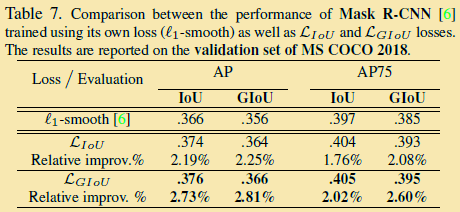

介绍
目标检测是很多计算机视觉应用的基础，比如实例分割、人体关键点提取、人脸识别等，它结合了目标分类和定位两个任务。
现代大多数目标检测器的框架是 (two-stage/single-stage)，目标检测被定义为一个多任务学习的过程，主要包括：
区分前景物体与背景，并给它们分配恰当的类别标签。
回归相应的位置参数，最大化检测框与(GT\ bounding\ box)的交并比((IoU))或是其他指标。
目标检测主要的优化方向
二维目标检测实现和优化方向包括backbone、IoU、损失函数、NMS、anchor、one shot learning/zero shot learning等。
基于目标检测的backbone和特征提取
目标检测的backbone一般是基于ImageNet预训练的图像分类网络。图像的分类只关注分类以及感受视野，不用关注目标的定位，目标检测同时还要关注图片的空间信息。如果下采样过多，会导致最后的Feature map很小，小目标很容易被忽略。现在很多基础网络，ResNet、MaskR-CNN、DenseNet、FPN、DetNet、RetinNet等能够提取图像的上下文信息，在特征提取上不断优化。
基于位置回归的优化算法
包括UnitBox、IoU-Net，能够预测检测到的边界框和它们对应的GT bounding box之间的IoU，使得该网络能像其分类模块一样，对检测框的定位精确程度有所掌握，神经网络在Backbone引入IoU-Net做边界修订。
基于优化损失函数的方法
主要有Smooth L1 loss、Smooth L2 loss、Focal loss等
基于优化NMS的方法
主要有Soft-NMS,Softer-NMS,以及Relation Netwrok，ConvNMS，NMS Network，Yes-Net等
基于Anchor生成的算法
有Sliding window、Region Proposal Network（RPN）、CornerNet、meta-anchor等。
One-shot learning以及Zero shot learning
都属于迁移学习领域主要研究的是网络少样本精准分类问题，单样本学习能力。
GIoU
Motivation
包围框回归是2D/3D视觉任务中的重要模块，不管是目标检测，目标跟踪，还是实例分割，都依赖于对bounding box进行回归，以获得准确的定位效果。
其中IoU((Intersection\ over\ Union))是使得包围框回归的重要参数。简单来讲就是模型产生的目标框((Result))与 (GT) 的重叠率。可以理解为检测结果与GT的交集比上它们的并集，公式为：
$$IoU=\frac{Result\bigcap GT}{Result\bigcup GT}$$
IoU是目标检测中一个重要的概念，在anchor-based的方法中，他的作用不仅用来确定正样本和负样本，还可以用来评价输出框((predict\ box))和(Ground\ Truth)的距离，或者说(predict\ box)的准确性。IoU有一个好的特性就是对尺度不敏感((scale\ invariant))。
在regression任务中，判断predict box和gt的距离最直接的指标就是IoU，但所采用的loss却不适合，如图所示，在loss相同的情况下，regression的效果却大不相同，也就是说loss没有体现出regression的效果，而IoU却可以根据不同的情况得到不同的数值，能最直接反应回归效果。
Method
本文提出用IoU这个直接指标来指导bounding box的回归。与其用一个代理的损失函数来监督学习，不如直接用指标本身来的好。此时损失函数为：
$$L_{IoU}=1-IoU$$
但是直接使用IoU作为损失函数会出现两个问题:
- 如果两个框没有相交，根据定义，IoU=0，不能反映两者的距离大小（重合度）。同时因为loss=0，没有梯度回传，无法进行学习训练。
- IoU无法精确的反映两者的重合度大小。如图所示，三种情况IoU都相等，但看得出来他们的重合度是不一样的，左边的图回归的效果最好，右边的最差。

针对IoU的两个缺点，论文提出了一个新的指标GIoU((Generalized\ Intersection\ over\ Union))，如图所示：
GIoU的定义很简单，就是先计算两个框的最小闭包区域面积，再计算IoU，再计算闭包区域中不属于两个框的区域占闭包区域的比重，最后用IoU减去这个比重得到GIoU。GIoU有如下4个特点：
与IoU相似，GIoU也是一种距离度量，作为损失函数的话，满足损失函数的基本要求。$$L_{GIoU}=1-GIoU$$
GIoU对scale不敏感。
GIoU是IoU的下界，在两个框无线重合的情况下，IoU=GIoU。
IoU取值[0,1]，但GIoU有对称区间，取值范围[-1,1]。在两者重合的时候取最大值1，在两者无交集且无限远的时候取最小值-1，因此GIoU是一个非常好的距离度量指标。
与IoU只关注重叠区域不同，GIoU不仅关注重叠区域，还关注其他的非重合区域，能更好的反映两者的重合度。
其实GIoU不仅定义简单，在2D目标检测中计算方式也很简单，计算重合区域和IoU一样，计算最小闭包区域只需要得到两者max和min坐标，坐标围成的矩形就是最小闭包区域。
GIoU和IoU作为loss的算法如下所示：
步骤为：
- 分别计算GT和Predict Box的面积
- 计算Intersection的面积
- 计算最小闭包区域面积
- 计算IoU和GIoU
- 根据公式得到loss
Experiments
GIoU loss可以替换掉大多数目标检测算法中bounding box regression，本文选取了Faster R-CNN、Mask R-CNN和YOLO v3 三个方法验证GIoU loss的效果。实验在Pascal VOC和MS COCO数据集上进行。
效果如下：


可以看出YOLOv3在COCO上有明显涨点，但在其他模型下涨点并不明显，作者也指出了faster rcnn和mask rcnn效果不明显的原因是anchor很密，GIoU发挥作用的情况并不多。
总体来说，文章的motivation比较好，指出用L1、L2作为regression损失函数的缺点，以及用直接指标IoU作为损失函数的缺陷性，提出新的metric来代替L1、L2损失函数，从而提升regression效果，想法简单粗暴，但work的场景有很大局限性。